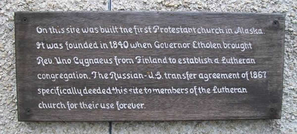

Announcements
Current Calendar
Current Soundings
Worship times
10:30 AM
Office hours
8:00 AM - noon M-F
Pastor
Mon, Tue, Thu:
9:00 AM - Noon
Wed: 3:00 - 6:00 PM
and by appointment
Fri: day off
907-747-3338

Sitka Lutheran Church
PO Box 598
224 Lincoln St
Sitka, AK 99835
WORSHIP - What to expect
 When you visit Sitka Lutheran for Sunday worship, here are some things to expect:
When you visit Sitka Lutheran for Sunday worship, here are some things to expect:
We have one worship services every Sunday morning. Our 10:30 a.m. worship is about one hour long and consists of prayers, readings, and a variety of music. Our basic pattern of worship is one common among many Christian churches:
- We come together.
- We hear God’s Word.
- We share the Lord’s Supper.
- And we are sent into the world to proclaim the gospel and serve in the name of Christ.
COMMUNION?
We have Holy Communion every Sunday. Jesus Christ is the host at the communion table. All are welcome at the Lord’s Table regardless of church affiliation. The pastor and assistants distribute bread (gluten-free is available), and wine or grape juice to everyone at the table. If you do not wish to receive these, please know that you may also come forward during this time and receive a blessing.
CHILDREN?
Children are welcome at all our worship services and a children’s talk is always at hand. During worship, if they need a break, you can see and hear everything from the Family room at the back of the worship space. We have Sunday School for those aged 3 through adults at 9:15am, September through May. During the summer months we encourage families to worship together.
OFFERING?
We are a congregation who believe sharing our God-given gifts and resources is a worshipful part of our discipleship. We do take an offering at every service to allow members and friends to contribute their tithes and offerings. Do not feel you have to make an offering on your first visit. If you do, thank you for your generosity.
WHAT SHOULD I WEAR?
On any given Sunday morning you will find us dressed in casual attire or in suits, Carharts and Xtratufs or rain gear abounding since we live in a temperate rain forest, blue jeans, t-shirts (clean). Do not let your clothing keep you away from the celebration.
WORSHIP - What we believe

WE SEEK TO PROCLAIM AND LIVE OUT the good news of God's love in Jesus Christ for all people. As Lutheran Christians, we stand on four basic principles:
- GRACE ALONE
God's love is unearned and unconditional. This love is called "grace." - FAITH ALONE
Through God's gift of faith we say "yes" to God's gift of grace. - CHRIST ALONE
God's ultimate act of selfless love comes through the death and resurrection of Jesus Christ. - SCRIPTURE ALONE
Through the scriptures we discover God's love and life. We seek to understand the modern world in dialog with these authoritative words of faith.
WE RESPOND TO WHAT GOD HAS DONE THROUGH
- Worship
- Fellowship
- Caring
- Service
Ecumenical Partners
Locally, Sitka Lutheran Church is a member in the Sitka Christian Ministerial Association which consists of about 12 different denominations. Jointly, we create and participate in the annual Blessing of the Fleet and a community Easter Sunrise Service.
Internationally, Lutherans are part of a reforming movement within the whole Christian church; as a part of practicing their faith, the Evangelical Lutheran Church in America has, and continues to, engage in ecumenical dialogue with other church bodies. The ELCA has entered into cooperative "full communion" agreements with several other Protestant denominations, including
- The Episcopal Church
- The Moravian Church
- The Presbyterian Church (USA)
- The Reformed Church in America
- The United Church of Christ
- The United Methodist Church
WORSHIP - Wednesdays
Traditionally Wednesdays have been a day for church activities. Here at Sitka Lutheran the tradition continues. Everyone is invited to participate in these relaxed and meaningful experiences.
Pioneer Home worship: 10:30 AM

In the morning we lead a short Protestant worship service at the Pioneer Home. This ministry is shared with St. Peter’s by-the-Sea Episcopal Church and Sitka United Methodist Church.
The Pioneer home provides an assisted living environment for elders of our community. The photo is from the Alaska Department of Health and Social Services website.
Soup & Study: 6:00 PM
We share a simple meal of soup and bread and then take up a short study of the Biblical text for the coming Sunday. Occasionally we hold a casual Vespers worship with Holy Communion.
Advent and Lent: 6:00 PM
We honor these church seasons which proceed Christmas and Easter. Our Wednesday evening gatherings include special worships and/or studies.
WORSHIP - Weddings

We are delighted you might consider being wed at Sitka Lutheran Church. The information on this page is presented as an aid for you to make a host of decisions leading up to your wedding day as well as inform you as to what is expected with a wedding within the church setting. Christian marriage is more than two people in love publicly declaring their intention to join together in marriage. As representatives of the church and Christ we believe that God institutes marriage. We strive to make each wedding comfortable, special, and holy.
THINGS TO KNOW
- The wedding is for the couple and will be done, in good taste and decorum, as the couple wishes and as the pastor approves.
- The pastor will meet with the bride and groom a minimum of three times for premarital counseling sessions. These premarital get-togethers are a) for the pastor to get to know you; b) for you as a couple to get to know each other; c) ) to lay a good foundation for a Christian marriage; d) to work out the details of the service. If there are special problems, other meetings can be arranged. It is understood that what is said in the counseling sessions by both the couple and the pastor is confidential.
- Christ will be mentioned during the counseling sessions and during the wedding.
- The wedding is not a performance, but a gathering of participants who come to pray, worship, and look for God's blessings. It is God who has brought two people together through the gift of love. It is God who will bind two people together in the oneness of marriage. We ask that you as a couple share the spirit of joy, blessings, and concern so that the service will be meaningful and give glory to God.
- The weddings of Sitka Lutheran Church members and their families will be given precedence over those of non-members.
- Church facilities can be made available for a reception after the wedding pending other scheduled events.
- The Pastor does not charge a fee for her or his services. A musician may charge a fee for services. In either case, honorariums will be accepted although none are expected.
For complete information on planning a wedding please contact Sitka Lutheran at 907-747-3338
WORSHIP - Funerals

Funerals are services of worship, remembering the deceased, celebrating God's grace and preparing family and friends to grieve properly in the light of Christian hope. Because funerals are an important part of the healing ministry of the church, the following guidelines are offered so that families may have some direction in the midst of difficult and often confusing circumstances.
THINGS TO KNOW
- If death is imminent, then please the Pastor so that she or he may be there to offer final prayers and farewell and Godspeed to the loved one.
- The death of a member of Sitka Lutheran is to be reported to the Pastor as soon as possible. The Pastor will visit with the family and begin with them the preparations for the funeral, memorial, or celebration of life.
- Funerals can be arranged for those people are loosely associated with Sitka Lutheran or have no other church affiliation.
- The funeral may be held at the church with a graveside service to follow or the entire funeral may take place at the grave site, whichever the family prefers.
- In preparation for the funeral the family may suggest favorite Bible passages, hymns, poems, and/or stories that might be used in the service.
- Church facilities can be made available for a reception after the funeral pending other scheduled events.
- The Pastor does not charge a fee for her or his services. A musician may charge a fee for services. In either case, honorariums will be accepted although none are expected.
Please contact the church office for complete information: 907-747-3338
Welcome!
We are glad you are visiting our website and hope to see you soon at the church itself.
We are a congregation of exciting, interesting, faithful Christians who seek to serve our community and lead people into a deeper faith in Jesus Christ. We worship with joy, serve with warmth and compassion, and strive to be followers of Christ in all that we do.
Sitka Lutheran Church is a member congregation of the Evangelical Lutheran Church in America (ELCA). Sitka Lutheran welcomes all people regardless of age, economic level, gender, race, ability, or sexual orientation.
Join us!

GROW in Faith Formation - Children: Ages 3 through 12
Sunday School

Sunday mornings at 9:15 there are lessons for age 3 through 12 from September through May.
Vacation Bible School
A FREE week long VBS takes place every summer. This event is jointly sponsoedr by Sitka Lutheran Church, the United Methodist Church, Assembly of God, Grace Harbor, St. Peter’s Episcopal, and the First Presbyterian Church.
Glacier Bible Camp for Grades 5 through 12
Each summer the youngsters of the Lutheran churches in Southeast Alaska gather for a week of camp. learning about God’s love and forgiveness, hiking, singing, playing, games, crafts, and nightly campfires are all a part of the wonderful experience of camp.
GROW in Faith Formation - Youth: Grades 8 through 12
Sunday Mornings
Confirmed youth are invited and welcome to participate in leading worship.
Confirmation
Middle school youth are invited to attend a one year program of confirmation classes, service, and fellowship. We learn show God’s love to others through service projects. We want the youth to learn what it means to be a Christian in today’s world and invite them to continue the journey for the rest of their lives. We make faith come alive as we learn about the Lutheran faith and compare our beliefs with other world religions. Parents and adults are strongly encouraged to be involved this process.
 Youth Group
Youth Group
Sunday afternoon the youth meet for fun and fellowship. All are invited to join in games, sledding, cook-outs, hikes, making food, singing, and anything else we can think of to fun together. This is also a safe place to talk about your emerging faith and how God fits in your life.
Regional and National Gatherings
We send our Youth to Regional and National ELCA Youth Gatherings. We are looking forward to the 2014 Western States Youth Gathering in California and the 2015 National Youth Gathering in Detroit.
GROW in Faith Formation - Adults
Sunday Lessons
Wednesday evenings at about 6:3 PM, right after Soup Supper
A discussion of the major events of the bible that will coincide with our Sunday sermon messages.
Men’s Breakfast Bible Study
Thursday mornings at 6:30 AM in the Fellowship Hall
Women's Bible Study
1st & 3rd Thursdays of the month at 12:30 PM in the Pioneer Home.
Studies are taken from the Women of the ELCA magazine, Gather.
Adult Forum
Sunday School - Sunday Mornings 9:15 AM in the church lobby
We take a look at the major articles in the current issue of The Lutheran magazine and talk through the study guide questions.
The “Other” Adult Forum
Sundays at 12:30 PM
Adults meet to discuss a theological topic of their choosing. We started with the basics of Lutheran doctrine and are moving on from there to more in-depth looks at the Lutheran point of view.
New Members Class – 4 Weeks
As the need and desire arises we will conduct new member classes. We will meet 4 to 7 times for an interesting and fun time of understanding Christianity and Lutheranism, joining a church, and SLC membership to help you on your spiritual journey.
GROW in Faith Formation - What Is a Lutheran?
 Martin Luther (b. November 10, 1483, in Eisleben, Germany, d. February 18, 1546, in Eisleben) is known as the Father of Protestantism. He had studied to become a lawyer before becoming an Augustinian monk in 1505 and was ordained a priest in 1507. While continuing his studies in pursuit of a Doctor of Theology degree, he discovered significant differences between what he read in the Bible and the theology and practices of the church. On October 31, 1517, he posted a challenge on the church door at Wittenberg University to debate 95 theological issues. Luther's hope was that the church would reform its practice and preaching to be more consistent with the Word of God as contained in the Bible.
Martin Luther (b. November 10, 1483, in Eisleben, Germany, d. February 18, 1546, in Eisleben) is known as the Father of Protestantism. He had studied to become a lawyer before becoming an Augustinian monk in 1505 and was ordained a priest in 1507. While continuing his studies in pursuit of a Doctor of Theology degree, he discovered significant differences between what he read in the Bible and the theology and practices of the church. On October 31, 1517, he posted a challenge on the church door at Wittenberg University to debate 95 theological issues. Luther's hope was that the church would reform its practice and preaching to be more consistent with the Word of God as contained in the Bible.
What started as an academic debate escalated to major religious disagreements fueled by fiery temperaments and violent language on all sides. As a result, there was not a reformation of the church but a separation. "Lutheran" was a name applied to Luther and his followers as an insult but adopted as a badge of honor by them instead. Lutherans still celebrate the Reformation on October 31. (See “What we believe” for more information).
Engraving of Dr. Martin Luther
from the archives of the
Evangelical Lutheran Church
in America

CONNECT - Contact Sitka Lutheran Church
907-747-3338
slc.admin@acsalaska.net
Office Hours
Secretary
TBA
Pastor

Mon, Tue, Thu:
9:00 AM - Noon
Wed: 3:00 - 6:00 PM
and by appointment
Fri: day off
Mailing Address:
SITKA LUTHERAN CHURCH
PO BOX 598
SITKA, AK 99835
Physical Address:
224 Lincoln Street
CONNECT - Links
Find us on facebook:
- Sitka Lutheran Church
- Southeast Alaska Cluster of the Evangelical Lutheran Church in America
- ALASKA Synod of the Evangelical Lutheran Church in America